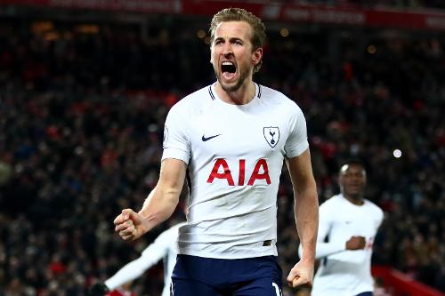

Harry Kane became the 27th member of the Premier League's "100 Club" and received a special message from
the only player who reached the landmark faster than him. He may have needed two attempts from the penalty
spot at Anfield to bring up the century, but the Hotspur striker reached the milestone in the
second-quickest time in the competition’s history with his stoppage-time penalty in the 2-2 draw with
Liverpool on Sunday. It took Kane just 141 matches to reach 100 Premier League goals for Spurs.
Only Alan Shearer has reached a century of Premier League goals in fewer matches, taking just 124 appearances
to become the club's first member. And Shearer had a special congratulatory message for Kane for reaching
the milestone. After joking over what took Kane so long, Shearer praised Kane's "character" for taking
the penalty that got him to 100, only a few minutes after seeing his first spot-kick saved.